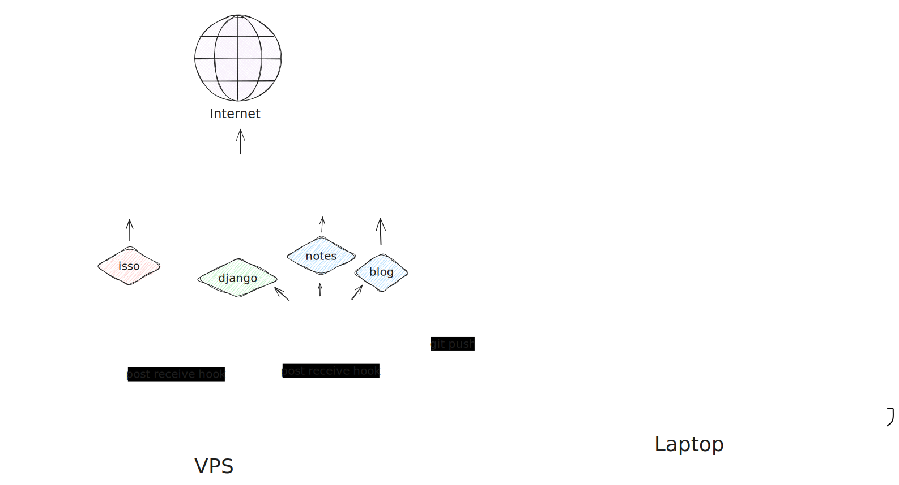

Making of this website
21 Feb 2024 — Barış Salman
Table of Contents
- 1. schema
- 2. Blogging with org mode
- 2.1. styling
- 2.2. org mode can add latex figures to HTML
- 2.3. sidenotes
- 2.4. noweb blocks
- 2.5. bibliography
- 2.6. indexing
- 2.7. tables
- 2.8. tag noexport
- 2.9. header argument :eval no-export
- 2.10. appendices
- 2.11. comments section
- 2.12. date and author signature at the begining
- 2.13. org-publish configuration
- 2.14. org-glossary
- 2.15. making plots
- Server software components
- Comments
I have started learning programming with python. That’s why my first entry to web development has been with Django. Django is an opinionated framework which works for me as a geneticist who don’t really have much of an opinion on how a website should be organized.
At this time I was also starting with Doomemacs. I had use vim/neovim for over 5 years before switching Emacs. I still have Astrovim installed but I mainly do everything on Emacs.
After the initial setup I started looking for blogging solutions. After seeing what org mode is capable of doing I looked no further for blogging.
1. schema
org-publish-all command exports the blog under the omicssbs/ directory and changes are uploaded the website and github with git push.
Git hooks on server automatically deploy the changes and restart required services.

2. Blogging with org mode
There are a lot of features I use from org mode or org related plugins one tends to forget some of them. Tracking the features and options used in org mode and having a reference document to look back to were the main reasons for writing this post.
2.1. styling
Style I use for the website called .css is based on which works really well with the org-mode exported HTML files.
2.2. org mode can add latex figures to HTML
Orgmode compiles latex fragments as SVG figures and can add them to HTML files. I haven’t tried to create a tikz image yet but chemfig images like below displayed as expected.
$$
\chemname{\chemfig{[:150]@{C2}N*6(-(-N([:0]-@{C1}H)([:120]-H))=N-=-(=@{C3}O)-)}}{Cytosine} \qquad %
\chemname{\chemfig{N([:180]-@{G2}H)*6(-(-N([:180]-@{G3}H)([:-60]-H))=N-*5(-N-=N-)=-(=@{G1}O)-[,,,2])}}{Guanine} %
%\chemmove{ %
%\draw[-,dash pattern=on 2pt off 2pt] (C1)--(G1); %
%\draw[-,dash pattern=on 2pt off 2pt] (C2)--(G2); %
%\draw[-,dash pattern=on 2pt off 2pt] (C3)--(G3);
%}
$$
2.3. sidenotes
The .css has support for sidenotes which can be used like this in an org file.
html:<label for="sn-symbol" class="sidenote-toggle">⊕</label> html:<input type="checkbox" id="sn-symbol" class="sidenote-toggle"> sidenote At this time I was also starting with Doomemacs. I had use vim/neovim for over 5 years before switching Emacs. I still have Astrovim installed, but I mainly do everything on Emacs. sidenote
2.4. noweb blocks
I define variables in noweb blocks under a no-export header. I use noweb blocks in other blocks as well as in text itself with in like code. This way I can have text and code synchronized.
;* Variables :noexport:
These are the variables used both in text and the code. This way both the code and the text are in sync.
#+NAME: gwas_control_number
#+begin_src R :exports none
50000
#+end_src
Let's say we have found src_R[:noweb yes :eval yes]{<<snp_number>>} {{{results(=10=)}}} SNPs significant in a study with src_R[:noweb yes :eval yes]{<<gwas_case_number>>} {{{results(=50000=)}}} cases and src_R[:noweb yes :eval yes]{<<gwas_control_number>>} {{{results(=50000=)}}} controls.
2.5. bibliography
Doomemacs biblio module includes citar and required packages. I export my bibliography from Zotero with better-bibtex plugin.
bibliography: /home/bar/org/lib.bib ;* References print_bibliography: print_glossary: :type glossary acronym index :level 0 :consume no :all no :only-contents no
2.6. indexing
Orgmode publish function creates the index page based on index attributes in the individual files.
#+INDEX: emacs #+INDEX: org mode #+INDEX: blog #+INDEX: django
2.7. tables
Orgmode has extendable tables.
|---+---------+---------------+----------------+-------| | | cons | react | volume (μl) 1⨯ | 7⨯ | |---+---------+---------------+----------------+-------| | ! | | | x1 | x7 | | / | | | > | | | | 10μM | Pf | 1 | 7 | | | 10μM | Pr | 1 | 7 | | | | dH2O | 1.68 | 11.76 | | | | 2X Master Mix | 12.5 | 87.5 | | | 5M | Betaine | 6.5 | 45.5 | | | | DMSO | 0.32 | 2.24 | |---+---------+---------------+----------------+-------| | | | aliquot | 23. | | | ^ | | | aliquot | | | | 50ng/μl | DNA | 2 | | | ^ | | | DNA | | |---+---------+---------------+----------------+-------| | | | Total | 25. | | | ^ | | | total | | |---+---------+---------------+----------------+-------| TBLFM: @4$5..@9$5=$x1 * 7 TBLFM: $aliquot=vsum(@4..@-1) TBLFM: $total=$aliquot+$DNA
2.8. tag noexport
Anything under the heading with the tag noexport will not be exported to the final document.
#+EXCLUDE_TAGS: noexport ;* My_heading :noexport:
2.9. header argument :eval no-export
This way code blocks are not evaluated when exporting to html.
#+PROPERTY: HEADER-ARGS+ :eval no-export
2.10. appendices
Appendices or any other unnumbered heading can be achieved like this.
;* Comments :PROPERTIES: :UNNUMBERED: t :END:
2.11. comments section
Comment section are added at the end of every blog post with following block.
;* Comments :PROPERTIES: :UNNUMBERED: t :END: HTML_HEAD_EXTRA: <script data-isso="//comments.omics.sbs/" src="//comments.omics.sbs/js/embed.min.js"></script> EXPORT html <section id="isso-thread"> <noscript>Javascript needs to be activated to view comments.</noscript> </section> EXPORT
2.12. date and author signature at the begining
There is a special block named post-tag which has a custom css. I just have the date and some summary links at this block.
post-tag 30 December 2023 — Barış Salman Links – https://salsa.debian.org/yangfl-guest/scrcpy – https://github.com/Genymobile/scrcpy post-tag
2.13. org-publish configuration
This configuration publishes to the blog directory under my Django project. So when I push both of them together. There is a preamble and head parts which makes it fit with the rest of the website. Any additional style or script I want in the blog pages I write to base app in the Django project. This way same style is applied everywhere (except notes which is a different app in itself).
;; Blog Configuration (require 'ox-publish) ;; Define the publishing project (setq org-publish-project-alist '(("posts" :recursive t :base-directory "~/org/roam/blog" :publishing-function org-html-publish-to-html :publishing-directory "~/Desktop/Workbench/omicssbs/blog" :section-numbers t :with-toc t :with-author t :with-creator t :with-date t :time-stamp-file t :exclude-tags ("draft") :makeindex t ; sitemap configuration :auto-sitemap t :sitemap-title "Blog" :sitemap-sort-files anti-chronologically :sitemap-style list :sitemap-sort-folders ignore :sitemap-date-format "%A %d %B %Y %H:%M" :sitemap-file-entry-format "%t %d" ; html configuration :html-html5-fancy t :html-head " <script async src=\"https://analytics.umami.is/script.js\" data-website-id=\"c0d0b77c-5c98-4814-9721-bb72437e9467\"></script> <link rel=\"shortcut icon\" href=\"https://omics.sbs/static/base/img/fav.ico\" /> <link rel=\"stylesheet\" href=\"https://omics.sbs/static/base/css/latex.css\" /> <link rel=\"stylesheet\" href=\"https://omics.sbs/static/base/css/style.css\" />" :html-postamble " <script src=\"https://omics.sbs/static/base/js/script.js\"></script> " :html-preamble " <script> if (localStorage.darkMode == \"true\") { document.body.classList.add(\"latex-dark\"); } else { document.body.classList.remove(\"latex-dark\"); } if (localStorage.typeface == \"Libertinus\") { document.body.classList.add(\"libertinus\") } else { document.body.classList.remove(\"libertinus\") } </script> <ul id=\"navbar\"> <li> <a href=\"https://omics.sbs/\">Home</a> </li> <li> <a href=\"https://omics.sbs/blog\">Blog</a> </li> <li> <a href=\"https://omics.sbs/notes\">Notes</a> </li> <li> <a href=\"https://omics.sbs/bioscripts\">Bioscripts</a> </li> <li class=\"preferences\"> <button class=\"dark-mode-button\" id=\"dark-mode-toggle\" aria-label=\"Toggle color mode\" title=\"Toggle color mode\"> <div class=\"sun\"> </div> <div class=\"moon\"> <div class=\"star\"></div> <div class=\"star small\"></div> </div> </button> </li> <li class=\"preferences\"> <input type=\"button\" id=\"typeface-toggle\" title=\"\" value=\"Aa\"> </li> </ul> " ) ("static" :recursive t :base-directory "~/org/roam/blog" :base-extension "css\\|js\\|png\\|jpg\\|jpeg\\|svg\\|gif\\|pdf\\|mp3\\|ogg\\|swf" :publishing-directory "~/Desktop/Workbench/omicssbs/blog" :recursive t :publishing-function org-publish-attachment ) ) )
2.14. org-glossary
org-glossary find the headers named glossary and acronyms and uses the definitions under them to create links to them when used in text.
;* Glossary – allele :: One of the alternatives of a genomic locus. Human autosomal chromosomes have two alleles for every locus each inherited from a parent ;* Acronyms – PRS :: Polygenic Risk Score
2.15. making plots
In code blocks graphics file can be given as the output argument. Orgmode links this file into buffer which Emacs can display.
HEADER: :file PRS2.svg HEADER: :R-dev-args bg="transparent" src R -r :results output graphics file :session R-session :exports both ggplot(samples, aes(x=PRS, y=as.numeric(samples$status) -1, color=status)) + geom_point(shape = "|", position = position_jitter(w = 0.5, h = 0)) + geom_hline(yintercept = c(0,1), linetype = "dashed", color = "grey") + scale_y_discrete(name ="Status", labels=c("Control","Case"), limits=c(0,1)) ;#+end_src
Server software components
Nginx
Nginx is the door to the internet. It serves the blog and note pages and acts as a reverse proxy for Django and Isso. The directive /next hosts the static files for the notes and /static hosts the static files for the Django app as well as the blog. There also some redirect directive which makes it easier to share other socials.
server_name omics.sbs;
location = /favicon.ico { access_log off; log_not_found off; }
location /static/ {
root /home/bar/omicssbs;
}
location / {
include proxy_params;
proxy_pass http://unix:/run/gunicorn.sock;
proxy_buffering off;
proxy_request_buffering off;
}
location /blog {
root /home/bar/omicssbs;
index sitemap.html;
}
location /orui {
root /home/bar/omicssbs;
index index.html;
}
location /_next {
root /home/bar/omicssbs/orui;
}
location /feeds {
root /home/bar/omicssbs;
}
location /linkedin {
return 301 https://www.linkedin.com/in/baris-salman/;
}
location /biostars {
return 301 https://www.biostars.org/u/36413/;
}
location /orcid {
return 301 https://orcid.org/0000-0002-7657-8576;
}
location /github {
return 301 https://github.com/barslmn/;
}
Django
Django is the web framework that serves the landing page and bioscripts apps. Its biggest use is making bioscripts front-end pages.
var2texshade
This is composed of two functions. First, acts like an api, just takes in the hgvsp id returns the pdf file.
def var2texshade_api(request, hgvsp): module_path = settings.BASE_DIR.parent.joinpath("bioscripts/modules/var2texshade/") try: result = subprocess.check_output(f"tsp -fn {module_path.joinpath('var2texshade.sh')} {hgvsp}", shell=True) except subprocess.CalledProcessError as E: return render(request, 'bioscripts/var2texshade.html', {"error": f"Error: {E.output.decode('utf-8')}"}) return FileResponse(open(result.decode('utf-8').strip(), 'rb'), as_attachment=True, filename=f'{hgvsp}.pdf')
Second function just renders the form the user sees gets the hgvsp id from the form and makes the api call above.
def var2texshade(request): if request.method == 'POST': form = Var2TexShadeForm(request.POST) if form.is_valid(): hgvsp = form.cleaned_data['hgvsp'] return redirect("bioscripts:var2texshade_api", hgvsp=hgvsp) else: form = Var2TexShadeForm() return render(request, 'bioscripts/var2texshade.html', {'form': form})
cross-symbol-checker
Because this process takes longer, I had a different approach to this one. There is again two functions. First one renders the form gets the required entries and starts the process with task-spooler (queue tool on Linux). We create a 6 character token and use that as a label in task-spooler job and pass this token to result view which is handled in the second function.
def crosssymbolchecker(request): # if this is a POST request we need to process the form data if request.method == 'POST': # create a form instance and populate it with data from the request: form = CrossSymbolCheckerForm(request.POST) # check whether it's valid: if form.is_valid(): # process the data in form.cleaned_data as required symbols = form.cleaned_data['symbols'] assembly = form.cleaned_data['assembly'] source = form.cleaned_data['source'] symbols = symbols.replace("\r\n", " ") # Process module_path = settings.BASE_DIR.parent.joinpath("bioscripts/modules/cross-symbol-checker/") label = secrets.token_urlsafe(6) subprocess.run(f"tsp -L {label} {module_path.joinpath('check-geneset.sh')} -s {source} -a {assembly} {symbols}", shell=True) return redirect("bioscripts:crosssymbolchecker_result", label=label) # if a GET (or any other method) we'll create a blank form else: form = CrossSymbolCheckerForm(initial={'symbols': 'ADA2\nLOC102724070\nMDR1\nSHFM6\nGSTT1\nFAM126A'}) return render(request, 'bioscripts/crosssymbolchecker.html', {'form': form})
In the second function, we grep for the 6 character token in task-spooler jobs. By default task-spooler writes the outputs to a temp file. When the process is finished we serve the file.
def crosssymbolchecker_result(request, label): try: status, filename = subprocess.check_output(f"tsp -l | grep {label} | awk '{{print $2\" \"$3}}'", shell=True).decode('utf-8').split() except ValueError: return render(request, 'bioscripts/crosssymbolchecker_result.html', {"label": label, "status": "error"}) if request.method == 'POST': try: return StreamingHttpResponse( (line for line in open(filename).read()), content_type="text/plain", headers={'Content-Disposition': f'attachment; filename="omicssbs_genesetchecker_{label}.txt"'}, ) except FileNotFoundError: return render(request, 'bioscripts/crosssymbolchecker_result.html', {"label": label, "status": "error"}) return render(request, 'bioscripts/crosssymbolchecker_result.html', {"status": status, "label": label})
Cron
There is one user cron for creating a JSON RSS feed from the university’s announcement page. This runs every 4 hours in work hours from 6:00 AM to 6:00 PM.
0 6-18/4 * * * /home/bar/omicssbs/feeds/duyuru.py
There is also two root jobs. One for keeping everything updated and one for auto-renewing the SSL certificate managed by the autocertbot.
0 0 * * * sudo apt autoremove -y ; sudo apt autoclean -y; sudo apt update -y; sudo apt upgrade -y 15 0 * * * "/opt/acmesh/.acme.sh"/acme.sh --cron --home "/opt/acmesh/.acme.sh" > /dev/null
Isso
Isso is the standalone commenting app. Initially, I looked for a Django package for this, but I couldn’t find anything to my liking. I later experimented with Commento but settled upon Isso. It has moderation and threads and easy to set up which was the main things I was looking for.
Git
Git handles how I upload new stuff to the servers.
Both of the repositories on my laptop have and additional push URL besides Github.
This URL is just a file path to server like so pushurl = bar@omics.sbs:/home/bar/omicssbs.git.
They’re bare repositories meaning they just have the git objects and not the actual files.
They do have scripts under them that runs when I pushed main branch.
git post-receive hooks
These files live under the hook directory of the bare git repositories on the server. Any time a push is made to the main branch they are run. This script just puts the new files to a directory.
- bioscripts
#!/bin/sh WORK_TREE="/home/bar/bioscripts" GIT_DIR="/home/bar/bioscripts.git" while read oldrev newrev ref; do if [ "${ref##*/}" = "master" ]; then echo "Master ref received. Deploying master branch to production..." git --work-tree="$WORK_TREE" --git-dir="$GIT_DIR" checkout -f CWD=$(pwd) cd "$WORK_TREE" git --work-tree=. --git-dir="$GIT_DIR" submodule update cd "$CWD" else echo "Ref $ref successfully received. Doing nothing: only the master branch may be deployed on this server." fi done
- omicssbs
This script, in addition to bioscripts hook, does django related things and restarts the gunicorn service.
#!/bin/sh WORK_TREE="/home/bar/omicssbs" GIT_DIR="/home/bar/omicssbs.git" while read oldrev newrev ref; do if [ "${ref##*/}" = "master" ]; then echo "Master ref received. Deploying master branch to production..." git --work-tree="$WORK_TREE" --git-dir="$GIT_DIR" checkout -f "$WORK_TREE"/venv/bin/python "$WORK_TREE"/manage.py collectstatic --noinput "$WORK_TREE"/venv/bin/python "$WORK_TREE"/manage.py makemigrations "$WORK_TREE"/venv/bin/python "$WORK_TREE"/manage.py migrate "$WORK_TREE"/venv/bin/pip install -r "$WORK_TREE"/requirements.txt sudo systemctl restart gunicorn.service else echo "Ref $ref successfully received. Doing nothing: only the master branch may be deployed on this server." fi done
systemd
Systemd manages starting/stoping the gunicorn and isso apps.
gunicorn
[Unit]
Description=gunicorn daemon
Requires=gunicorn.socket
After=network.target
[Service]
User=bar
Group=www-data
WorkingDirectory=/home/bar/omicssbs
ExecStart=/home/bar/omicssbs/venv/bin/gunicorn \
--access-logfile - \
--workers 3 \
--timeout 600 \
--bind unix:/run/gunicorn.sock \
omicssbs.wsgi:application
[Install]
WantedBy=multi-user.target
isso
[Unit]
Description=gunicorn daemon
After=network.target
[Service]
User=bar
Group=www-data
WorkingDirectory=/home/bar/omicssbs
ExecStart=/home/bar/omicssbs/venv/bin/isso \
-c /home/bar/omicssbs/isso.conf
[Install]
WantedBy=multi-user.target